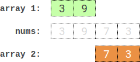
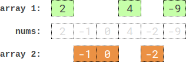

| Category | Difficulty | Likes | Dislikes |
|---|---|---|---|
| Algorithms | Hard | 3668 | 248 |
array | two-pointers | binary-search | dynamic-programming | bit-manipulation | ordered-set | bitmask
google | bloomberg | amazon | arcesium | infosys | texas-instruments | samsung
You are given an integer array nums of 2 * n integers. You need to partition nums into two arrays of length n to minimize the absolute difference of the sums of the arrays. To partition nums, put each element of nums into one of the two arrays.
Return the minimum possible absolute difference.
Example 1:

Input: nums = [3,9,7,3]
Output: 2
Explanation: One optimal partition is: [3,9] and [7,3].
The absolute difference between the sums of the arrays is abs((3 + 9) - (7 + 3)) = 2.Example 2:
Input: nums = [-36,36]
Output: 72
Explanation: One optimal partition is: [-36] and [36].
The absolute difference between the sums of the arrays is abs((-36) - (36)) = 72.Example 3:

Input: nums = [2,-1,0,4,-2,-9]
Output: 0
Explanation: One optimal partition is: [2,4,-9] and [-1,0,-2].
The absolute difference between the sums of the arrays is abs((2 + 4 + -9) - (-1 + 0 + -2)) = 0.
Constraints:
1 <= n <= 15nums.length == 2 * n-107 <= nums[i] <= 107